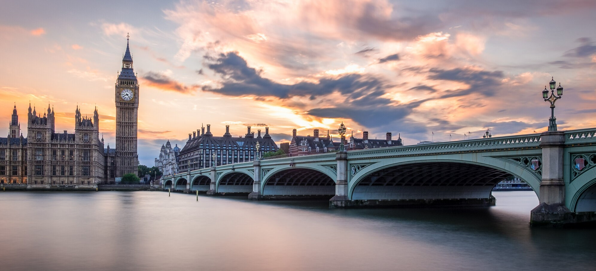
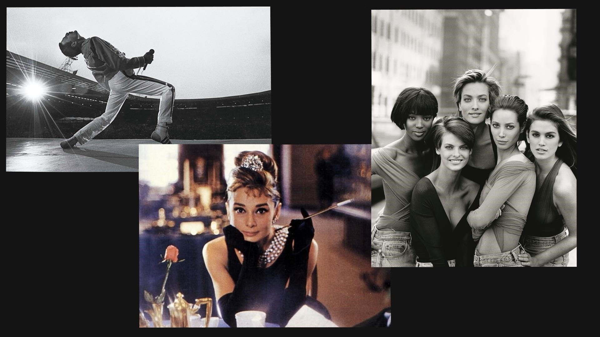
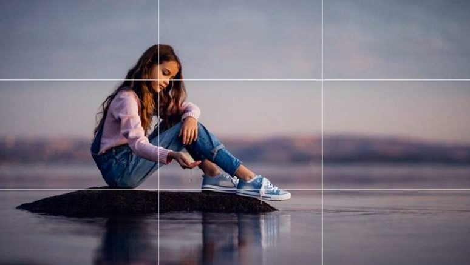
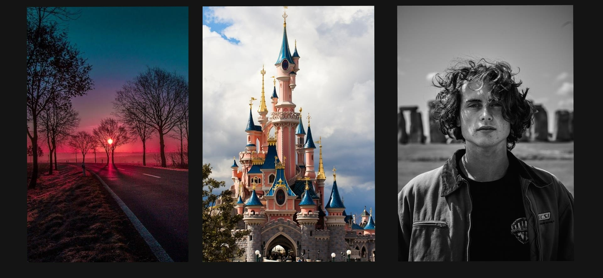
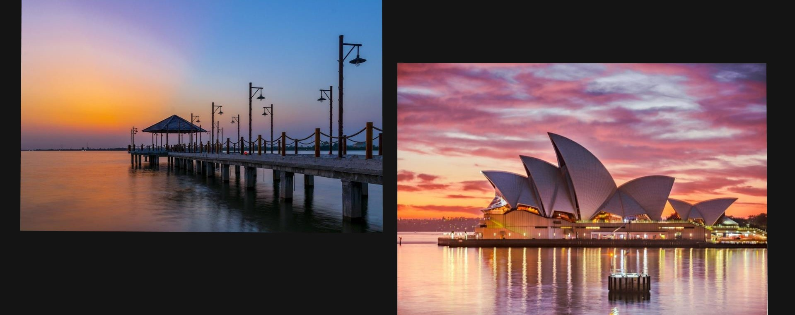
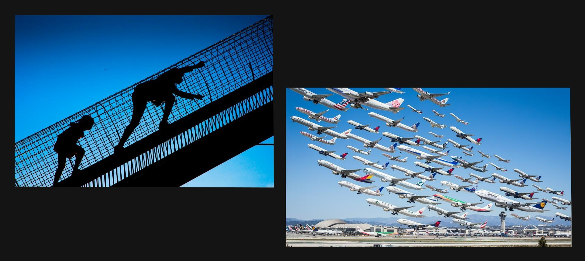
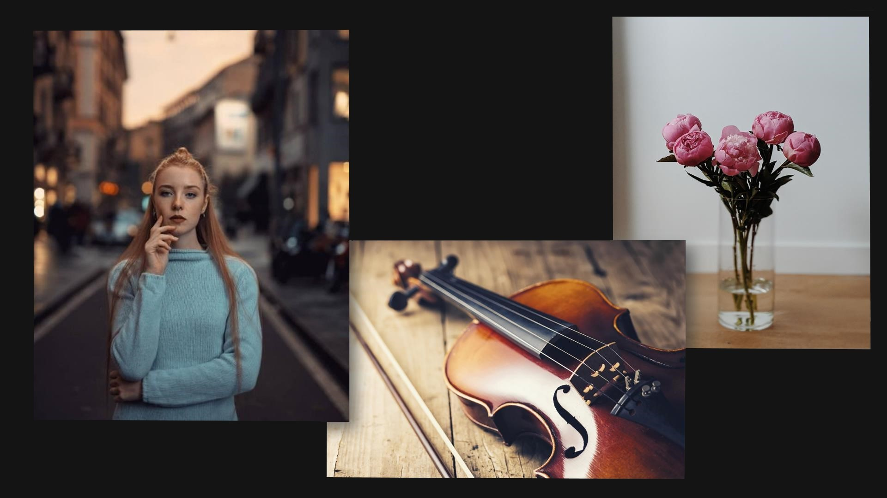
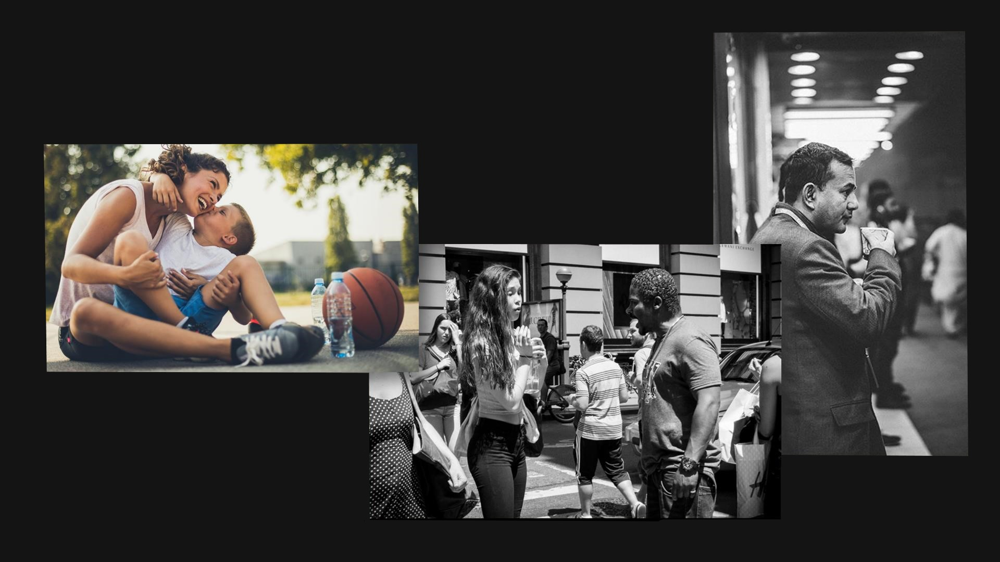

UPOZNAJ SE SA OSNOVAMA FOTOGRAFIJE I SAZNAJ KAKO DA UNAPREDIŠ SVOJE VEŠTINE

Kompozicija predstavlja raspored elemenata na fotografiji. Svaka fotografija trebala bi da sadrži jednu tačku fokusa - glavni motiv, koji će posmatrač moći jasno da uoči. Glavni motiv fotografije uvek treba da bude naglašen, a objekti koji ga okružuju da daju dodatni doprinos kako bi on bio još interesantniji. Da bismo napravili dobru fotografiju potrebno je da posmatramo motiv koji želimo da bude glavni na slici iz različitih uglova.


Pravilo trećina i pravilo zlatnog reza
Zamislimo da je fotografija podeljena linijama na 9 delova. Glavni motiv bi trebao da se nalazi na mestu gde se linije presecaju ili duž linija. On ne treba da se nalazi u samom centru slike, jer se tako ne postiže dinamičnost na fotografiji, pogotovo ako želimo da naglasimo kretanje osobe ili objekta. Najbolje je smestiti motiv u desni ili levi deo fotografije ne preblizu vrha slike, ali ne i blizu dna.
Vertikalnu kompoziciju koristimo kada fotografišemo drveće , arhitektonske objekte ili portrete da bismo naglasili visinu i stabilnost objekta.

Horizontalnu kompoziciju koristimo za pejzaže i panoramne snimke urbanih sredina, jer želimo da naglasimo prostranost.

Dijagonalnu kompoziciju koristimo za fotografisanje detalja (najčešće u pejzažu) koji su u pokretu, da bismo na slici naglasili kretanje.

Poželjno je da svaka fotografija bude organizovana u tri plana-prednji, srednji i zadnji. Glavni motiv se u većini slučajeva nalazi ili u prednjem ili u srednjem planu, dok je zadnji plan u stvari pozadina fotografije. Pozadina fotografije treba da bude neutralna, tj. da ne ometa i skreće pažnju posmatrača sa glavnog motiva (zamućivanjem pozadine postiže se treća dimenzija - dubina).

Kvalitetna fotografija može se napraviti i sponatno. U ovakvim uslovima obično fotografišemo ljude u posebnom raspoloženju čime naglašavamo i emocije na fotografiji.
